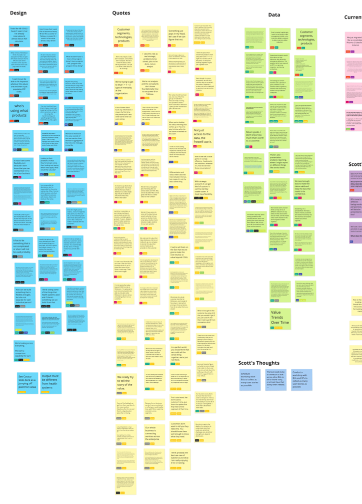
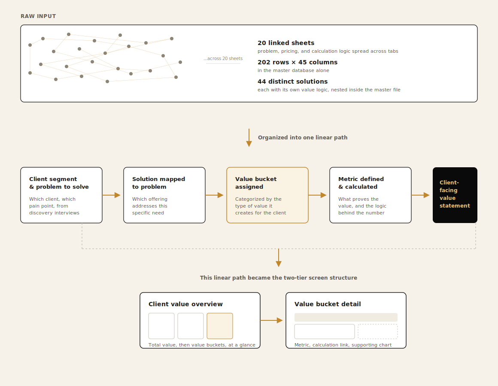
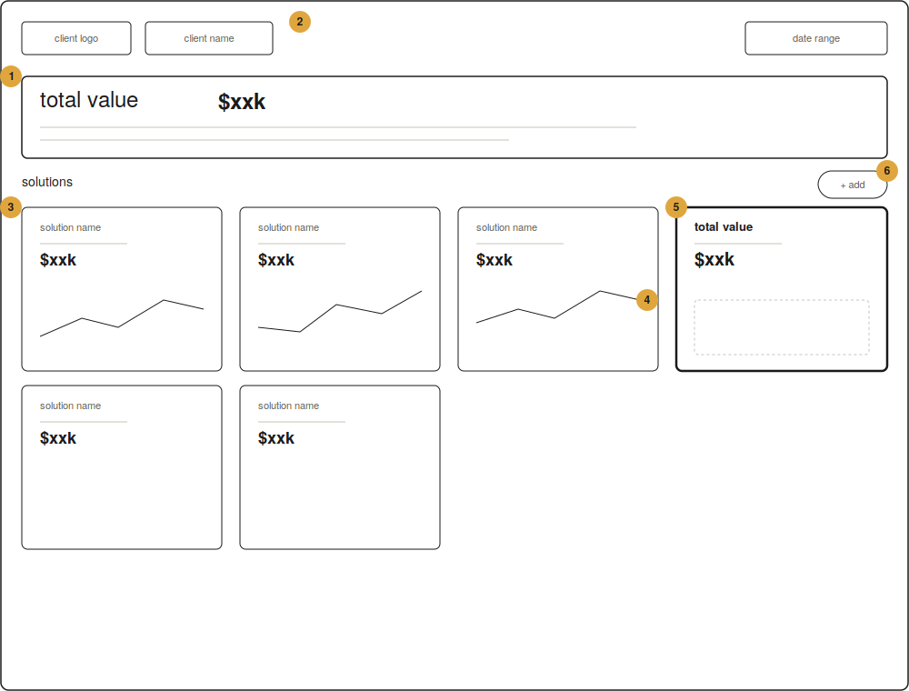
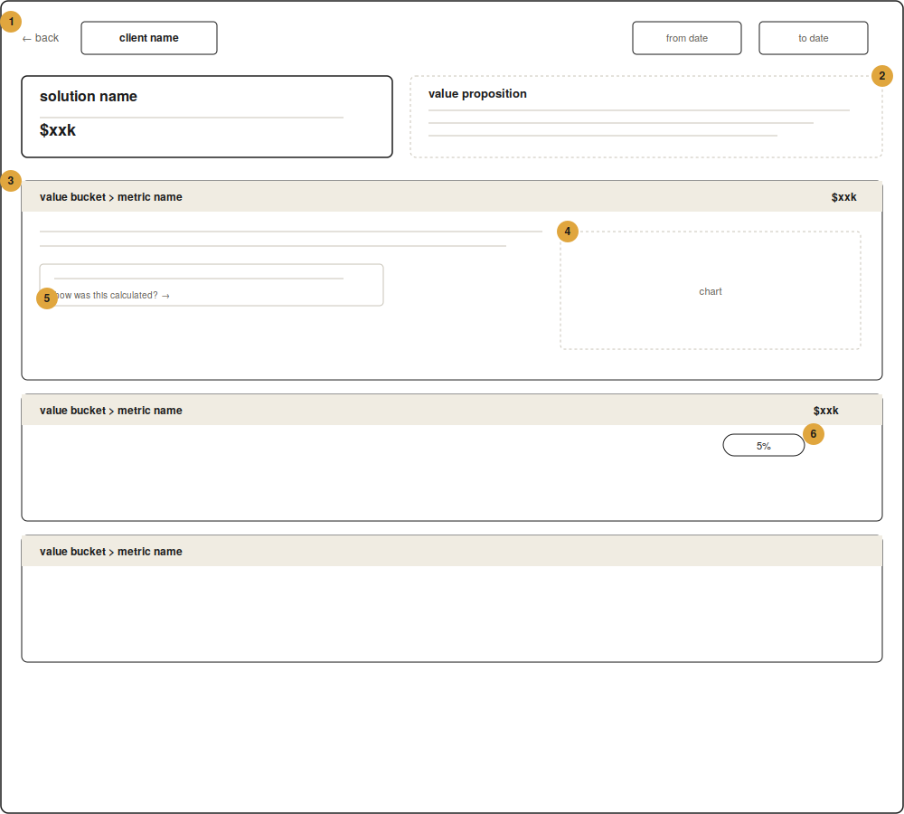
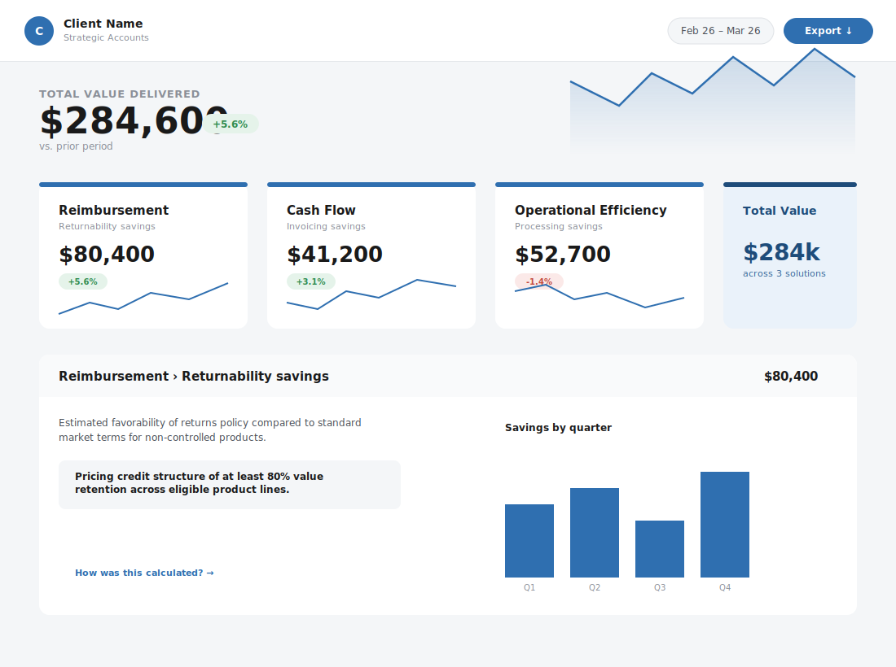
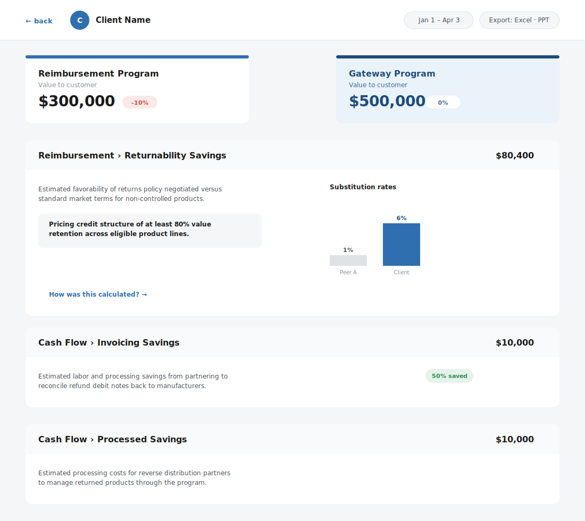

Case Study · UX Research & Design Strategy
Turning a fragmented, siloed reporting process into a shared, client-facing value-driven platform.
Overview
01 · The Situation
A large, regulated healthcare distributor had the data to tell clients a value story, but no way to do so quickly, consistently, and easily.
Account reps had strong client relationships and met quarterly for business reviews. Leadership wanted more from those conversations: the value clients received beyond the cost of goods (VBCoGs): the supply-chain efficiencies and operational savings clients were getting but couldn't quantify on their own.
To tell that story, account teams needed data and analysis. The data existed, but it lived in disconnected, siloed systems owned by teams who weren't always willing to share it.
In its current state, preparing for a quarterly review meant days of manual effort just to identify and track down the data, and understand it well enough to walk into a client conversation with a compelling story.
02 · The Main Problem
Initial conversations with stakeholders showed that nobody, not the stakeholders, not the data team, not the account teams, not the vendor building the infrastructure, had a complete understanding of what needed to be built or how it would actually work.
Each team owned a piece of that knowledge, but none could see it in full.
That was the gap I was there to close.
03 · My Process
Every interview I had with account reps uncovered another piece of the puzzle, but no one could explain the entire process end-to-end, because no one actually owned it.
The design challenge wasn't about creating a dashboard. It was about understanding what they needed to build, and answering the questions that would tell us whether it was worth building at all:

04 · Discovery
The problem wasn't that reps lacked effort. It was that the current system made a value story difficult to tell.
Preparing for a single client review often meant opening multiple disconnected systems, exporting spreadsheets, requesting reports from other departments, and manually combining everything into PowerPoint. Much of that work wasn't analysis: it was simply hunting for information.
Even after spending days assembling the presentation, reps still questioned whether the numbers were current or complete. Because each report came from a different source, they spent valuable meeting time explaining where the data came from, instead of discussing the value they'd delivered to the client.
Stakeholders were aligned on what success looked like too: a rep walking into any review able to state the client's value in minutes, backed by numbers they trusted, without hunting for the story first.
05 · From Insight to Design
From the themes, I mapped the end-to-end journey, defined the information architecture, and built wireframes that made the intended experience visible and discussable across the whole team.
The wireframes were the turning point. The vendor had struggled to understand what they were building. Once they could see it, the work gained momentum. Three rounds of prototype testing followed, iterating against real user needs and what was feasibly buildable.
During testing, several participants naturally looked for a client-level summary before diving into detailed metrics. My original navigation surfaced operational data first, forcing users to piece the story together themselves. I reorganized the experience around the client narrative: starting with overall value delivered, then letting users drill into supporting metrics.
Catching that before development avoided building the information architecture around the internal data model instead of the user's mental model, which would have required significant rework later.
The IA started as a spreadsheet of dozens of columns and rows of unstructured, complex data, value categories, and calculation logic spread across disconnected tabs, with no single view of how it all connected. Before I could design anything, I read through it and found the patterns nobody else was able to find. Stakeholders knew the data they needed was in there, but not how to organize it into a linear structure that could lead to a design.
Making sense of ambiguous, complex data is a skill I bring to every engagement, and this project is a clear example of it in practice.



These are the annotations for the image above.
These are the annotations for the image above.


06 · Delivery Decisions & Outcomes
Stakeholders chose to deliver through an existing platform (Salesforce) with an embedded analytics dashboard rather than build from scratch.
My validated design gave them a predefined framework to build against.
As discovery progressed, it became clear that the core challenge wasn't a lack of reporting technology: it was the absence of a shared workflow and information architecture.
My research and validated wireframes demonstrated that the experience could be delivered by configuring Salesforce around the user workflow, rather than creating an entirely new product. That decision reduced implementation risk while preserving the user experience.
In Their Words
"Thank you, @Scott Faranello, for diving headfirst into the deep end the past 2 months; you've absorbed so much knowledge and bring a fantastic perspective and level of rigor to our team."
Project team, mid-engagement
"Scott asked fantastic questions and moved the conversation exactly where it needed to go, while adjusting quickly in real-time."
Program lead, following a stakeholder session
"Conceptually, this is amazing... This tool is better than anything I've seen for capturing value before, and I'm excited about it. While the data piece continues to need work, your efforts will have a decided impact on the way the largest sales segment at the company operates! Thank you!"
SVP, Strategic Accounts, at launch training
07 · Reflection
On a complex system, the fastest path is often getting everyone to see the same thing at the same time. By grounding the work in real user conversations, using design to create visibility and collaboration, and keeping the business goal in front of every decision, I helped a cross-functional team move from ambiguity to a validated, buildable direction.
The shared picture I built through research was the thing that unblocked the work and what I am most proud of.